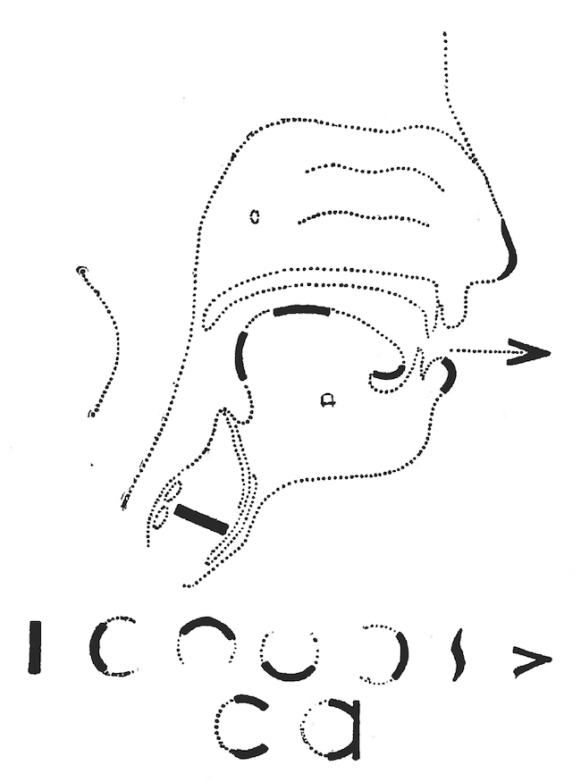
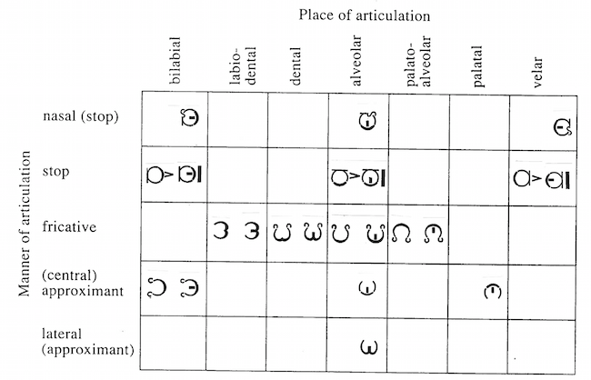

Alexander Melville Bell's 'visible speech' phonetic alphabet
The father of AG Bell (inventor of the telephone) devised a phonetic alphabet. Bell's Visible Speech is an 'iconic' phonetic alphabet, which means that the letters have visual elements that correspond to aspects of articulation. Bell called it an 'organic' phonetic alphabet because the symbols stand for the organs of speech. Some of the elements of the symbols are illustrated above, and a consonant chart for English is shown below.
 What IPA symbol corresponds to this Visible Speech symbol?
Correct: 0 ---- Run: 0